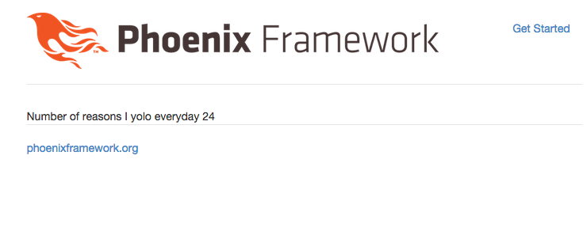

Phoenix is an MVC Web Framework. By default it sets up a controller called page and an action called index.
One subtle different you'll notice from rails is controller names tend to be in the singular rather than plural.
As of v 0.8 there aren't generators to create controllers, so we need to create them manually.
In this lesson we'll setup a new controller, called the quote controller and setup an action called homepage.
Quickly look at the project structure that was provided by the Phoenix framework. The bulk of the interesting code is in the folder called web. You'll see channels, controllers, models, templates, views.
If you're coming from rails, views is serving a role close to what helpers do in rails. templates on the otherhand serve the role of templated code.
Build a new file in the folder web/controllers called quote_controller.ex, and have it be a blank controller, with similar syntax to the page controller.
defmodule Splurty.QuoteController do
use Phoenix.Controller
plug :action
endSave the file.
We want to hook-up the root page of our application to go to the QuoteController and the homepage action.
To start with, let's look at how our application is hooked up. Run the following command to see which URLs are hooked up to, which controllers/actions.
$ mix phoenix.routesRight now it should say:
page_path GET / Splurty.PageController.index/2
Cool, let's change our routes so the root page goes to the QuoteController.
Open this file web/router.ex and edit it to look like this:
defmodule Splurty.Router do
use Phoenix.Router
pipeline :browser do
plug :accepts, ~w(html)
plug :fetch_session
plug :fetch_flash
plug :protect_from_forgery
end
pipeline :api do
plug :accepts, ~w(json)
end
scope "/", Splurty do
pipe_through :browser # Use the default browser stack
get "/", QuoteController, :homepage
end
# Other scopes may use custom stacks.
# scope "/api", Splurty do
# pipe_through :api
# end
end
Save the file.
Then run the command to see the routes table again to make sure things are setup properly.
$ mix phoenix.routesRight now it should say:
quote_path GET / Splurty.QuoteController.homepage/2
Cool, we hooked up our new action.
Next, let's add the homepage action into our controller.
Edit web/controllers/quote_controller.ex to look like this:
defmodule Splurty.QuoteController do
use Phoenix.Controller
plug :action
def homepage(conn, _params) do
render conn, "homepage.html"
end
endAnd then save the file.
We'll need to build the view file to support our quotes controller.
Build a new, blank view in the web/views folder that is caled quote_view.ex and make it look like this:
defmodule Splurty.QuoteView do
use Splurty.View
endSave the file.
Awesome, we're super close to having our app be updated.
Add a new folder for quote templates within the application:
$ mkdir web/templates/quote
Then add a file called homepage.html.eex to web/templates/quote folder. Add the following text to the file:
Number of reasons I yolo everyday <%= 10 + 14 %>
Save the file.
Return to your web browser. Refresh the page at localhost:4000 and the page should update.
You'll notice html.eex is similar to html.erb files in ruby. This allows you to template out HTML, and will execute elixir code, and display it to the page between the <%= and %>.
You should be looking at something that looks like this:
